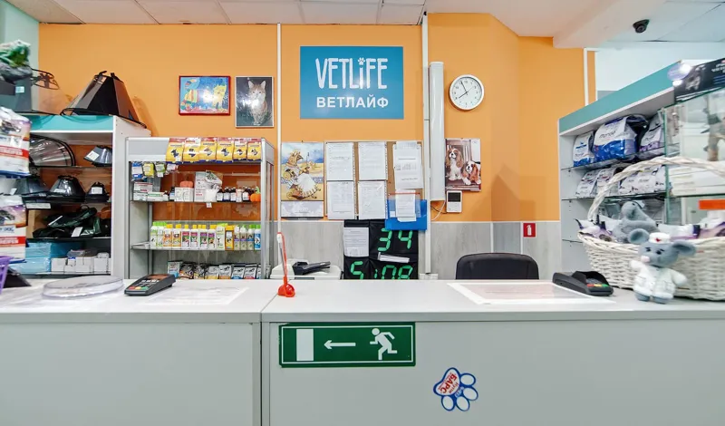

Ветеринарная клиника · Москва · Бескудниковский бульвар
Ветлайф. Круглосуточно.
Ветеринарная клиника и ветаптека у МЦК «Окружная». Приём, диагностика, хирургия, стационар.

Круглосуточно
Принимаем 24 часа в сутки без выходных. Двойного ночного тарифа на услуги врачей нет.
Инфекционный стационар
Отдельный стационар для животных с инфекциями — круглосуточно, плюс лечебный стационар и реанимация.
Своя диагностика
УЗИ, рентген, ЭхоКГ и лаборатория: анализы крови, мочи и кала — в клинике.
Хирургия
Стерилизация и кастрация, травматология, косметическая хирургия, скрытый косметический шов.
Узкие специалисты
Нефролог, кардиолог, дерматолог, онколог, офтальмолог, стоматолог, невролог, эндокринолог.
Ветаптека и зоомагазин
Лекарства, лечебные корма и аксессуары — в той же клинике, с 10:00 до 22:00.
«Мы заботимся о каждом животном»
— девиз клиники «Ветлайф»Запишитесь — мы на связи круглосуточно
Москва, Бескудниковский бульвар, 12, стр. 1 · МЦК «Окружная»